I probed Gemma-4-12B
the day it dropped.
Gemma 4 12B came out this afternoon. By the time the mxfp4 quant had landed on my drive and I'd confirmed it wasn't a broken convert, I already had hidden-state scans running against it. That's the whole pitch for this one: the method is fast enough to crack open a brand-new model the same day it ships and watch it think — before anyone's had time to write the first fine-tune. So that's what this is: a zero-day look inside a 48-layer dense model, while it still has the plastic film on.
six questions
all six land here
mxfp4 quant
7 writing systems
meaning → next token
I went in with one question: what does the model already know, and when in the stack does it know it? I started with the interlingua scan we run on every new model — a multilingual cosine sweep to find where language gets stripped and meaning takes over. After seeing a result similar to Gemma-4-31B, I started wondering how much two sentences with completely different words but the same meaning would converge in the mid-stack. That one stray question kicked off about six hours of probes that kept pointing at the same place.
Six probes. One zone.
Six probe sets, each built around a different question. Do paraphrases with different words but the same meaning converge mid-stack? Does a one-word flip that reverses meaning actually separate the vectors? When does an ambiguous token commit to one reading — and at which layer? Does an inflection point survive past the sliding-attention window? Which kinds of meaning survive translation across twelve languages? Where does word-sense disambiguation live at dataset scale?
Every single one pointed at the same band of layers, roughly L18 through L27. That band is where this model does meaning. Everything below it is still mostly working with surface form — tokens, spelling, word identity. Everything above it is already pivoting toward "what word comes next." The understanding lives in that middle third.
I didn't design six probes to find one zone. I designed six probes to ask six different questions, and the zone fell out of all of them. That convergence is the actual result; the demos below are just six camera angles on it.
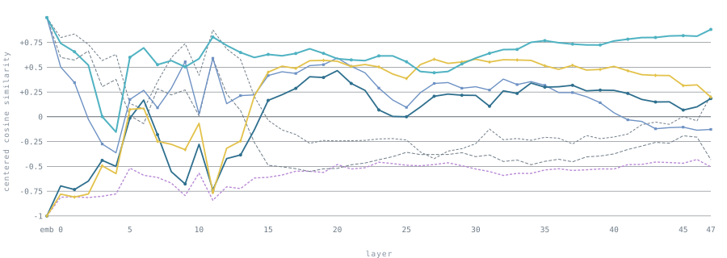
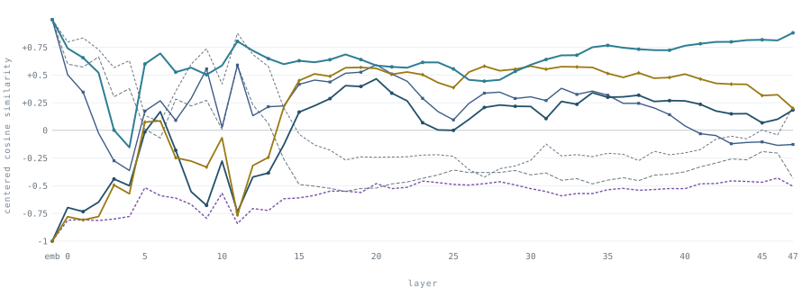
Fig 1 — the establishing scan. Centered-cosine similarity per layer. The plateau across L18–27 is where representations stabilize into meaning; the endpoints are still doing surface-form housekeeping. This is the shot everything else is a close-up of.
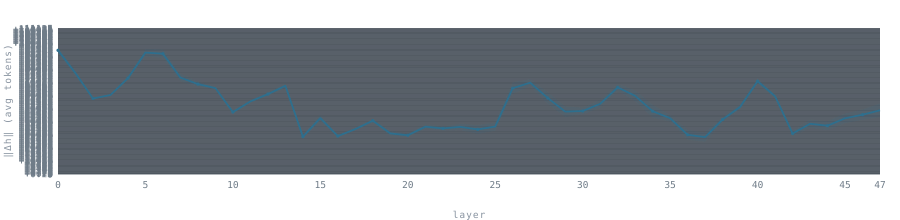
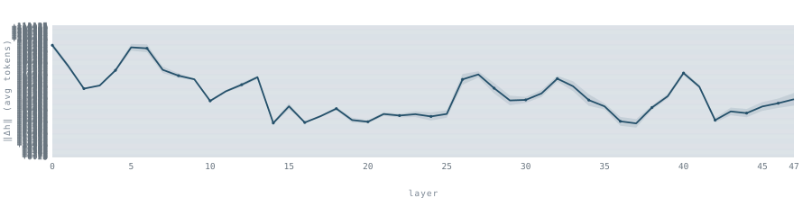
Fig 2 — where the work happens. Per-layer change in the residual stream (‖Δh‖). The front and back are quiet; the middle is where the stream is being rewritten the hardest. The endpoints move tokens around; the middle does the thinking.
Wrong turns, and one surprisingly good idea.
Both the right instrument and the right probes took some finding, and the wrong turns are half the story.
The readout problem. The first probes were paraphrase-invariance and sensitivity tests — same meaning / different words, versus near-identical surface / flipped meaning, on standard last-token cosine. The sensitivity probes came back flat. "The dog chased the cat" versus "the cat chased the dog" barely moved the number. My instinct was to aggregate over more tokens — mean-pool instead. That made it worse, and the reason was obvious once I saw it: mean-pooling is permutation-invariant by construction. "Dog chased cat" and "cat chased dog" are the same multiset of tokens — averaging throws away the word order that distinguishes them. I'd grabbed exactly the wrong tool for the one probe I was trying to fix.
Both approaches had the same blind spot: collapsing the whole sequence to one number loses where meaning diverges. The signal was in the data; I just couldn't see it. Which finally surfaced the obvious question — can we just show all of it? Every token position, every layer, similarity as color. Four axes of data collapse cleanly to a 2D heatmap per sentence pair: layer on one axis, token on the other, cosine as color. Stack them and you can read "which token, which layer" without guessing in advance. That instrument is what made everything else visible.
The homograph problem. Now I needed good pairs. I asked for homophones and got corrected immediately — I wanted homographs: words spelled the same, meaning different things. And not just two different sentences that happen to share a token (that proves nothing). I needed an inflection point — a later token whose meaning is set by something earlier, so that even though it's byte-for-byte identical between two versions, it becomes the place the geometry diverges. Not a changed token. A changed reading of an unchanged token. Two probes finally cracked it: "how do you do" vs "how do you do it" (one trailing word flips ritual into question), and the crane. The moment those worked, the frame clicked.
The crane that knew it was a bird.
Take two sentences identical except for one early word — "All afternoon at the harbor, we watched the crane" versus "…at the marsh, we watched the crane." "Crane" is byte-for-byte the same token in both. A construction crane at the harbor, a bird at the marsh — but the model reads the exact same characters. So when does its internal representation of "crane" split between the two readings?
Not at the input. There, "crane" is "crane" — the vectors are identical. The split happens mid-stack, layers deep, well after the word has been read. The model finishes reading "crane," carries it forward unchanged for several layers, and then — somewhere in the concept zone — decides which crane it is. You can watch the moment it decides. Commitment lags the cue.
It even survives distance. Push "harbor"/"marsh" and "crane" over a thousand tokens apart — further than the model's sliding-attention window — and the split still happens. The early word still recolors the later one. (How that's possible is the next section.)
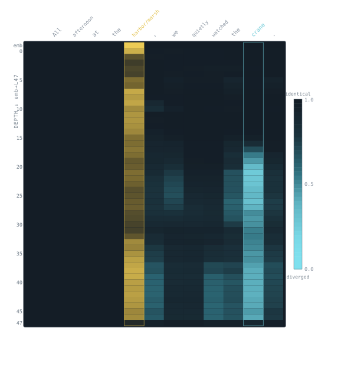
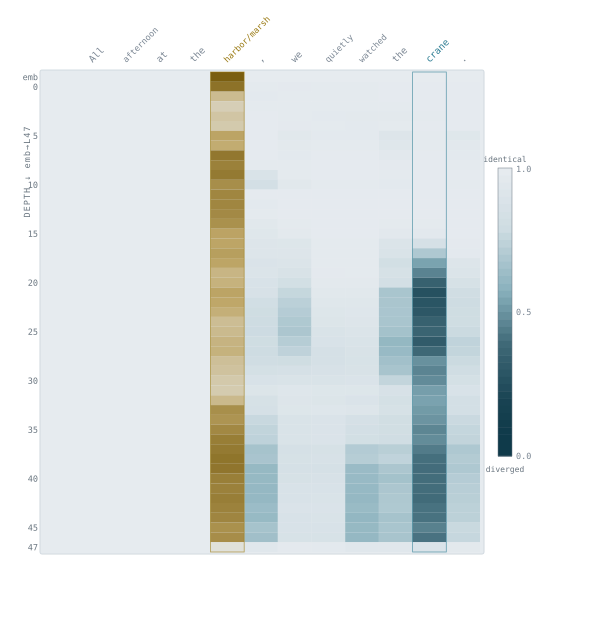
Fig 3 — the sleeper heatmap. Per-token × per-layer divergence for two near-identical sentences, sequence-aligned so only matched positions are compared. The model knows "crane" is a bird before it finishes the sentence — and you can see the layer where it decides.
The model knows "crane" is a bird before it finishes the sentence — and you can see the layer where it decides.
Two different things called "understanding."
The distance result forced a distinction I hadn't been careful about. There are two separate things going on when a model understands a far-apart connection, and Gemma gates them independently:
Access — can the later token even reach the earlier one? That's an attention-architecture question. Gemma 4 alternates sliding-window layers (local, cheap) with global full-attention layers (the whole sequence). Past ~1024 tokens, only the global layers can bridge the gap. Computation — once it has access, where does it actually compute the meaning? That's a depth question, and the answer is the concept zone, ~L17 onward.
These are not the same axis. I expected the long-range version to show divergence turning on at the first global-attention layer — access-gated, early. It doesn't. The onset is still depth-gated, in the mid-stack, regardless of where the global layers sit. Access is necessary, but it isn't where the understanding happens. You need both gates open, and they're controlled by different knobs.
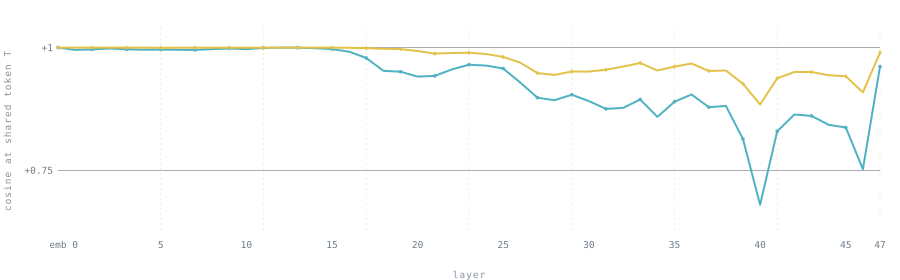
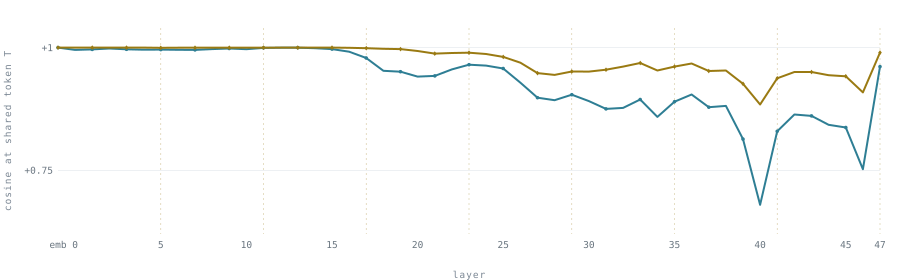
Fig 4 — the staircase. Short-range vs long-range (1112-token) callback, cosine at the shared token per layer. The global layers are marked; the divergence onset ignores them and lands in the concept zone anyway. Access and computation are different gates.
The crane is the cleanest, not the only one.
Eight more pairs from the same session — some nearly as crisp, some deliberately soft, one control — plus a counterexample that shows what bad probe design looks like. A single pair could be a special case; what makes it a finding is that the same shape — cold early, heating in the concept zone — keeps recurring, and when it doesn't, the reason is legible. The shaded band on each is L17–27; the tracked token is named.
Math is the least universal language.
The interlingua scan was the starting gun. This is the pointed version: take one sentence, translate it into twelve languages across seven writing systems, and ask — at each layer, how close together do all twelve land? High convergence means the model threw away the language and kept the meaning. Then do it for four kinds of sentence: a concrete fact ("the sun rises in the east"), an arithmetic one ("two plus three equals five"), an emotional one ("she cried because she was sad"), and an abstract one ("freedom is more important than money").
I'd have bet on concrete and numeric converging hardest — they feel the most universal. Two plus three is five in every language, right? Backwards. The order is abstract > emotion > concrete > numeric. The abstract, relational, propositional sentences are the most language-invariant; arithmetic is the most language-locked — it stays tied to its surface symbols the longest and converges the least.
One reading: abstract propositions reduce to pure relationships between concepts, and that relational structure is what survives once you strip the words. Arithmetic stays welded to its tokens — "two," "plus," "equals." Whatever the explanation, the empirical result holds: the meaning that crosses languages is relational, not concrete, and math is the least universal thing in the building.
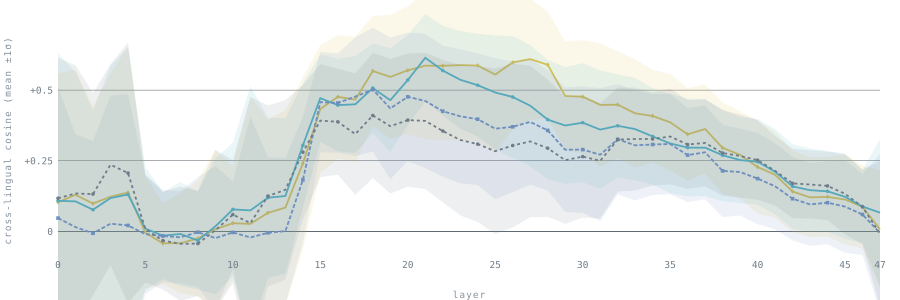
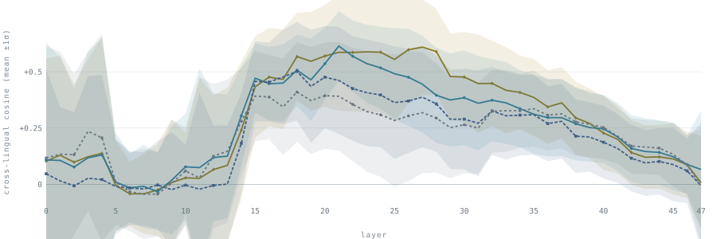
Fig 5 — cross-lingual convergence by type. Mean cosine over all 66 language-pairs per layer, four sentence types. Abstract sits on top, numeric on the bottom, the gap opening through the concept zone. The meaning that survives translation is relational, not concrete.
Word-sense, computed in the middle.
One more, at dataset scale. The WiC task (Words-in-Context) gives pairs that use the same word in either the same or a different sense — "river bank" vs "savings bank." I tracked the target word and asked where same-sense and different-sense pairs separate the most. Peak separation: L20 — right in the middle of the zone. Disambiguation isn't an input lookup and it isn't a late decision; the model builds the separation through the mid-stack, peaking at L20, then sheds it on the way to output.
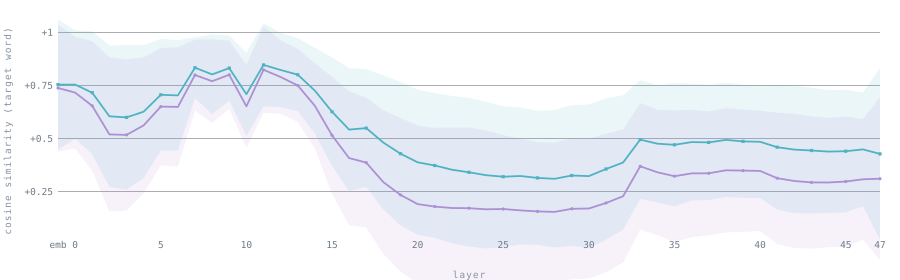
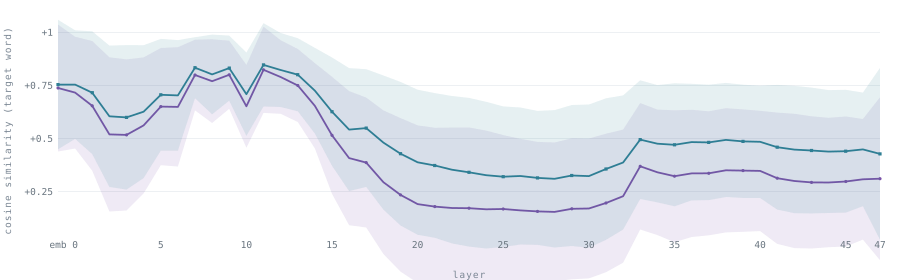
Fig 6 — WiC sense bands. Same-sense vs different-sense cosine across layers. The bands sit on top of each other at the embedding layer (the word is the same token), fan apart through the mid-stack to a peak gap at L20, then close again toward output. The zone, confirmed from a fourth direction.
The last layer collapses everything.
The last thing worth pointing at is the very top of the stack. After all of this — built meaning, disambiguated senses, stripped language — the final layer L47 collapses a lot of it. The representations that were rich and semantic in the concept zone get reshaped into something else, and that something else is "what token comes next." The last layer isn't holding the meaning; it's spending it — converting understanding into a prediction.
It's a clean reminder that the model's job was never to understand the sentence. Understanding is a means. The concept zone is where it lives; the top of the stack is where it gets cashed out for the only thing the model is actually optimized to produce: the next word. You can already see the drop at the right edge of the establishing scan (Fig 1) — the plateau falls off a cliff at L47.
The model's job was never to understand the sentence. Understanding is a means; the last layer spends it on the next word.
First specimen in the vivarium.
The plan is to run this same battery — sleeper tokens, the two-gate staircase, cross-lingual convergence, WiC, paraphrase invariance — across other models, and see which findings are Gemma-specific and which are just how transformers work. Does every model put word-sense at ~40% of its depth? Is the boundary between language and meaning a single layer or a gradient? Is numeric always the most language-locked? Does everything collapse at the final layer? I don't know yet — that's the next several entries. The method itself — how you pull per-layer hidden states out of a running MLX model, the hooks, the cosine math, the token alignment — is over in Methods, deliberately kept out of the way here. For now: a brand-new twelve-billion-parameter model, opened up on its launch day, and a middle third of its layers quietly doing all the thinking.
Scans run locally on Gemma-4-12B (mxfp4) via an MLX hidden-state hook; figures hand-built as static SVG from the scan JSON, no chart libraries. WiC examples from Pilehvar & Camacho-Collados (2019), part of SuperGLUE (CC BY-NC). "Gemma" is a Google model under the Gemma Terms of Use; this is an observational write-up, not a derivative model.